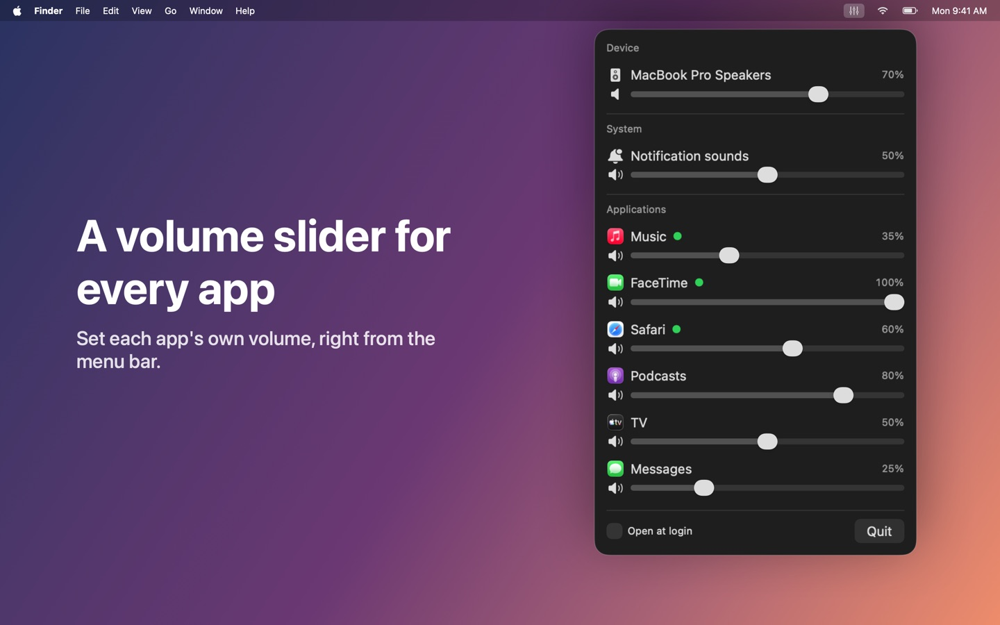
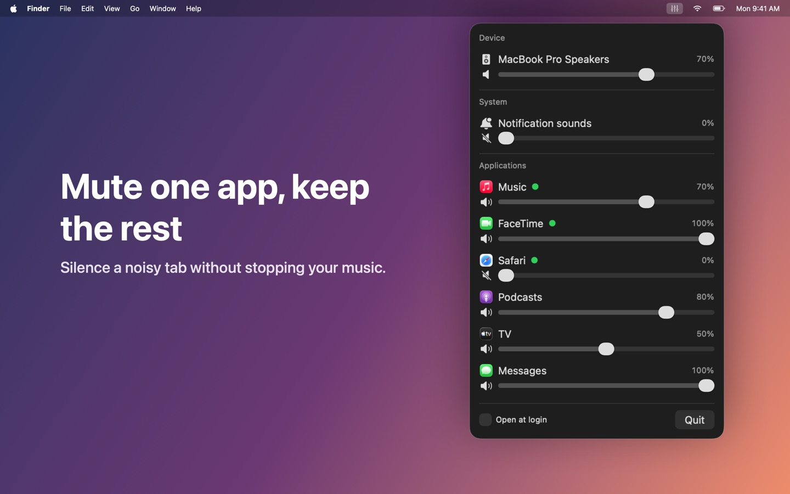
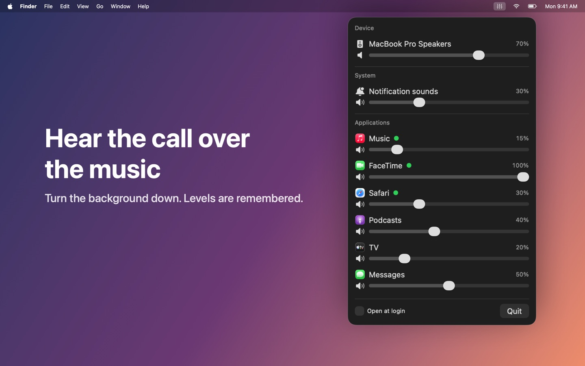

Volume Mixer Bar
Each app's own volume slider.
Your Mac has one volume for everything. Volume Mixer Bar gives every app its own. Click the sliders icon in the menu bar for a slider and a mute button per app: turn the music down during a call, mute a noisy tab, or quiet notification sounds on their own.


